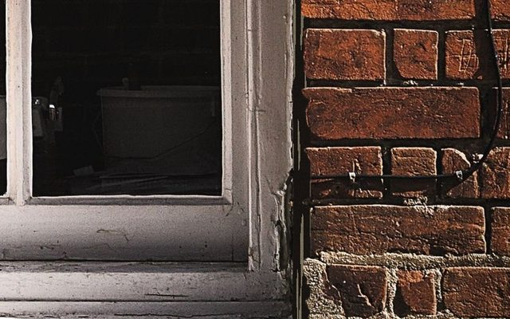
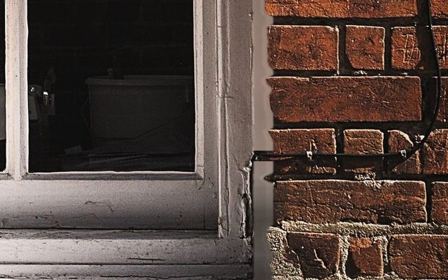
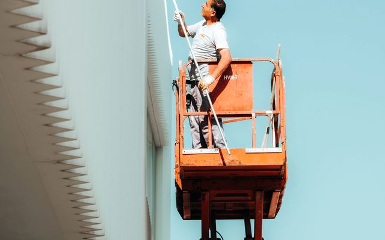
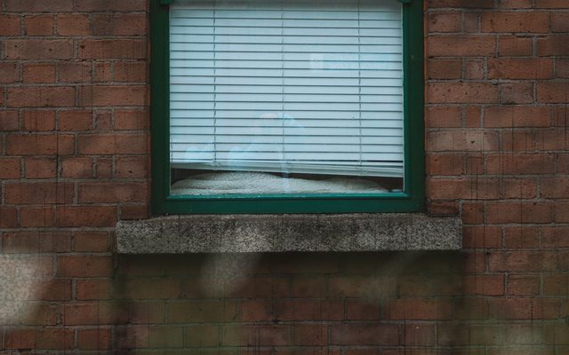
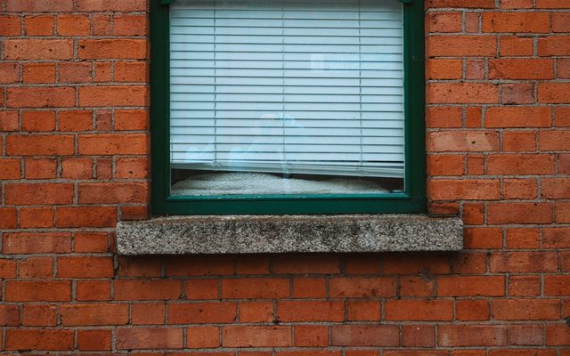

Calfeutrage, peinture et brique à La Prairie
À La Prairie, du Vieux-La Prairie aux quartiers récents, on refait les joints, on repeint et on lave la brique proprement.
Nos services à La Prairie
Calfeutrage, peinture de revêtement et lavage de brique : un seul entrepreneur pour l'extérieur de votre maison.
Photos d'illustration.
Du joint jusqu'à la façade
Une seule soumission pour plusieurs travaux.


Fendillé → lisseCalfeutrage
Fenêtres, portes et joints de revêtement : on retire le vieux scellant fissuré et on refait des joints étanches et propres.
Dès 350 $ Voir le détail
▶ En actionPeinture de revêtement extérieur
Revêtement de bois, de vinyle, d'aluminium ou de fibrociment : préparation, apprêt et deux couches, au pistolet ou au rouleau.
Dès 2 500 $ Voir le détail

Sale → propreLavage de brique à pression
Mousse, saleté, efflorescence et taches noires : on nettoie la brique et la pierre avec la bonne pression, sans abîmer les joints.
Dès 400 $ Voir le détailVous êtes à La Prairie?
Dites-nous ce qu'il y a à faire, on vous revient avec un prix écrit.
Questions fréquentes à La Prairie
Vous déplacez-vous partout à La Prairie?
Oui. Nous travaillons partout à La Prairie et dans les environs, pour les maisons, les plex et les petits commerces.
Combien coûte le calfeutrage d'une maison à La Prairie?
Le prix dépend du nombre de fenêtres et de portes et de la longueur des joints. Comptez à partir de 350 $; vous recevez une soumission écrite et gratuite avant les travaux.
Quand repeindre un revêtement extérieur?
Dès que la peinture pèle, farine au toucher ou a pâli au soleil. La meilleure période va de la fin du printemps au début de l'automne.
Pouvez-vous combiner plusieurs travaux?
Oui. On calfeutre souvent avant de peindre, et on lave la brique dans la même visite : une seule soumission, un seul chantier.
Les autres villes que nous desservons

Parlons de votre maison.
Décrivez-nous le travail, nous vous revenons avec un prix écrit.